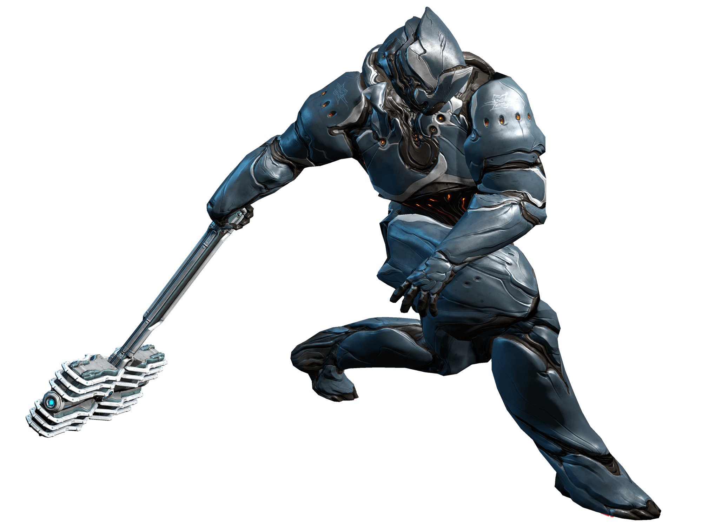

Warframe is a free-to-play action role-playing third-person shooter multiplayer online game developed and published by Digital Extremes. Released for Windows personal computers in March 2013, it was ported to the PlayStation 4 in November 2013, the Xbox One in September 2014, the Nintendo Switch in November 2018, the PlayStation 5 in November 2020 and the Xbox Series X/S in April 2021. Support for cross-platform play and cross-save, as well as ports to mobile devices, are planned for the second half of 2021. The game is in open beta.
